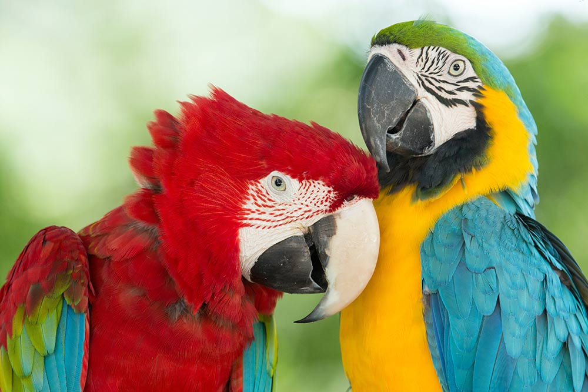
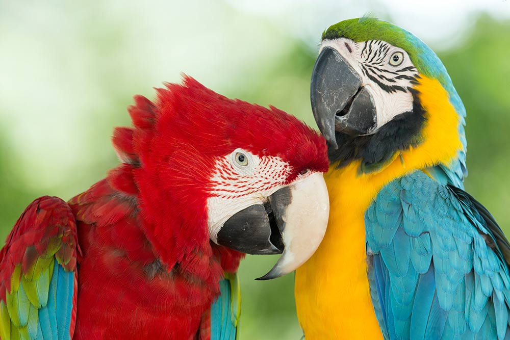

Velkommen til Dyre Fakta
Her finder du interessante og sjove fakta om dyr!
Fakta om Elefanter🐘
Elefanter er de største landdyr på jorden. De kan veje op til 6.000 kg og har et utrolig godt hukommelse. Elefanter er også kendt for deres komplekse sociale strukturer og stærke bånd med deres familiegrupper.
Fakta om Delfiner🐬
Delfiner er meget intelligente dyr og kan kommunikere med hinanden ved hjælp af lyde. De er kendt for deres legende natur og samarbejde i grupper, kaldet pods. Delfiner kan også lære at udføre tricks og opgaver, som de bliver trænet til.
Fakta om Kænguruer🦘
Kænguruer er kendt for deres stærke bagben og lange haler, som hjælper dem med at balancere, når de hopper. De kan hoppe op til 3 meter højt og 8 meter langt. Kænguruer lever primært i Australien og er et symbol på landets dyreliv.
Fakta om Papegøjer🦜
Papegøjer er farvestrålende fugle, der er kendt for deres evne til at efterligne menneskelig tale. De har en utrolig intelligens og kan lære at forstå ord og endda reagere på kommandoer. Papegøjer lever i tropiske og subtropiske områder over hele verden.
 
